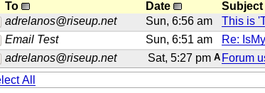

I returned to whonix yesterday to try to solve my VPN problem after 10 days or so:
forums.whonix DOT org/t/problem-on-whonix-when-connecting-to-nordvpn-or-basically-any-other-linux-vpn-provider/8126
And I thought of a way to solve this: using DNSCrypt. Because I had similar issues in the past with VPNs and dnscrypt always fixed it and the vpn that didn’t connect, connected fine after setting up dnscrypt.
I tested it and it works on a non-whonix system so I’m pretty sure if I setup dnscrypt on my Gateway I will be able to also solve my VPN problem… Even if you think DNSCrypt won’t solve my VPN problem, just bare with me and help me set it up. Maybe I just want dnscrypt and it doesn’t have anything to do with VPN!
So, I read: whonix DOT org/wiki/Alternative_DNS_Resolver
And although this wiki page says it’s supposed to be applied in Workstation I did it on Gateway, because I need dnscrypt on my Gateway.
Basically after successfully installing dnscrypt-proxy then everything else fails.
After editing resolv.conf and everything mentioned in the wiki page, when I start the dnscrypt-proxy service it just makes the connection fail, I can’t connect to anything since the nameserver isn’t exactly responding…
Note: the same exact dnscrypt setup works just fine on a non-whonix system. Like the same .toml config file and same resolv.conf and everything…
I don’t know what details to provide here for better help, but just tell me and I’ll post them here.
Oh, and the other question is this:
Is it a good idea to use firefox vpn addons on whonix tor browser for hiding the exit node? You know, instead of TOR > VPN…
Like this: VPN (on gateway after I set it up with success) > TOR > VPN FF Addon
DNSCrypt runs as user _dnscrypt-proxy by Debian dnscrypt package default. That user on Whonix-Gateway has neither clearnet system default networking access nor torified system default networking access.
This might help or be part of the solution. Untested. This would allow _dnscrypt-proxy to connect to clearnet.
Thanks Patrick, it helped, but it’s not totally fixed yet. But I’m sure with a little bit more guidance like these from you I’ll fix it and post the results here so everybody can benefit from it. Including all Whonix users, the person who has a similar issue to mine (Forum topic /t/installed-vpn-client-to-whonix-gateway-but-cant-connect/8254 ) *and possibly you if you decide to update the wiki for problems like this, or something like that… (See Update2 at bottom) *
When I used the firewall code you provided here in my whonix user firewall conf, dnscrypt sorta started working! It no longer gives errors when starting the service and starts fine. But not eveything passes through dnscrypt, like when I tried NordVPN again, it still didn’t work. Here’s some of my dnscrypt query log:
[2019-10-05 22:59:05] 127.0.0.1 download.dnscrypt DOT info A PASS
[2019-10-05 22:59:05] 127.0.0.1 download.dnscrypt DOT info A PASS
[2019-10-05 22:59:05] 127.0.0.1 download.dnscrypt DOT info A PASS
[2019-10-05 22:59:29] 127.0.0.1 googleDOT com A PASS
[2019-10-05 23:02:33] 127.0.0.1 whonix DOT org A PASS
[2019-10-05 23:02:44] 127.0.0.1 queue.amazonawsDOT com A PASS
[2019-10-05 23:02:44] 127.0.0.1 queue.amazonawsDOT com A PASS
(My god! the link limitation in forum posts is a pain in my a**!)
I used 127.0.2.1 as the nameserver IDK why it says 127.0.0.1 in the logs!
google and whonix DOT org logs are because I pinged them, obviously ping wasn’t successful but somehow it got logged and it says PASS!
But when I try testing to see if things are going through dnscrypt by using wget instead of ping, the things I wget get downloaded but don’t appear in dnscrypt log.
Here’s some of the logs when I tried connecting nordvpn:
2019-10-05 23:13:28] 127.0.0.1 njtzzrvg0lwj3bsnDOT info A SERVER_ERROR
[2019-10-05 23:13:28] 127.0.0.1 se3v5tjfff3aetDOT me AAAA SERVER_ERROR
[2019-10-05 23:13:28] 127.0.0.1 zwyr157wwiu6eiorDOT com AAAA SERVER_ERROR
[2019-10-05 23:13:28] 127.0.0.1 api.nordvpnDOT com AAAA SERVER_ERROR
[2019-10-05 23:13:28] 127.0.0.1 x9fnzrtl4x8pynsfDOT com A SERVER_ERROR
[2019-10-05 23:13:28] 127.0.0.1 njtzzrvg0lwj3bsnDOT info AAAA SERVER_ERROR
[2019-10-05 23:13:28] 127.0.0.1 73dkt-vwrqsDOT xyz A SERVER_ERROR
[2019-10-05 23:13:35] 127.0.0.1 ns8469rfvth42DOT xyz AAAA SERVER_ERROR
[2019-10-05 23:13:35] 127.0.0.1 boi9osyg1uwtyafnDOT com A SERVER_ERROR
[2019-10-05 23:13:35] 127.0.0.1 judua3rtinpst0sDOT xyz AAAA SERVER_ERROR
[2019-10-05 23:13:35] 127.0.0.1 tptn0rhbtjDOT info AAAA SERVER_ERROR
[2019-10-05 23:13:35] 127.0.0.1 boi9osyg1uwtyafnDOT com AAAA SERVER_ERROR
[2019-10-05 23:13:36] 127.0.0.1 queue.amazonawsDOT com A PASS
[2019-10-05 23:16:12] 127.0.0.1 zwyr157wwiu6eiorDOT com AAAA PASS
[2019-10-05 23:16:12] 127.0.0.1 zwyr157wwiu6eiorDOT com A PASS
[2019-10-05 23:16:14] 127.0.0.1 zwyr157wwiu6eiorDOT com AAAA PASS
[2019-10-05 23:16:14] 127.0.0.1 zwyr157wwiu6eiorDOT com A PASS
[2019-10-05 23:16:16] 127.0.0.1 se3v5tjfff3aetDOT me A SERVER_ERROR
[2019-10-05 23:16:16] 127.0.0.1 p99nxpivfscyverzDOT me A SERVER_ERROR
[2019-10-05 23:16:16] 127.0.0.1 api.nordvpnDOT com AAAA PASS
[2019-10-05 23:16:16] 127.0.0.1 judua3rtinpst0sDOT xyz AAAA PASS
[2019-10-05 23:16:16] 127.0.0.1 mxo4bkqvdityebzvpDOT xyz AAAA PASS
Oh and I read wiki page Whonix-Gateway_System_DNS but IDK why but the nodnsupdate file doesn’t exist in my gateway! so I didn’t continue the rest of instructions since I failed to do the first step. There’s only two files there:
user@host:~$ ls -lah /etc/dhcp/dhclient-enter-hooks.d/
total 12K
drwxr-xr-x 2 root root 4.0K Oct 5 23:22 .
drwxr-xr-x 4 root root 4.0K Jun 23 23:39 …
lrwxrwxrwx 1 root root 8 Dec 11 2018 debug -> …/debug
-rw-r–r-- 1 root root 2.8K Apr 1 2016 resolvconf
I just need dnscrypt to work, I need basically everything to go through it, except for TOR if it’s not needed.
i.e. I want it to be something like this:
Host > Whonix-gateway > DNSCrypt > VPN > TOR > Whonix-workstation.
I want the first node to have the IP of the vpn I’m gonna use on gateway instead of anything else, i.e. VPN > TOR. And for this to happen in my situation I also need DNSCrypt. Even if dnscrypt isn’t needed for my vpn problem, I just feel better if I have it, and past expirience and a feeling tells me dnscrypt will help me with vpn.
Sorry this post got long, but hopefully soon all will be resolved we’re done with this.
Also, @Patrick I’m going to send you a pm, please check. Thank you.
Update: I sent an email instead, since I couldn’t find a way to PM you here. But Email’s ok too
Update2:
Actually, I will write a wiki page for this myself after everything works out, if you’re ok with that.
As a contribution to the community and kind of a small reimbursement to you for helping me…
The wiki page(or pages) will be about both NordVPN/VPN and DNSCrypt on Gateway…
Edit/Update3:
Can you please answer my other question I posted at the bottom of my first post in this topic? Actually don’t read the one in my first post, I edited it and made it a better question: Is it a good idea to use a firefox vpn addon on whonix tor browser for hiding the exit node? You know, instead of TOR > VPN it will be like this: Host (with any configuration, maybe a vpn, not important) > Whonix gateway with a working VPN > TOR > Workstation > VPN addon on the browser
only applies to older versions of Whonix or those who have package anon-gw-dhcp-conf installed. Can be safely ignored. Added to documentation.
This might be difficult even outside of Whonix. Therefore as a prerequisite exercise it is required making that work on Debian buster before proceeding to try this on Whonix.
a race condition might result in the VPN starting before DNSCrypt
therefore the VPN might block DNSCrypt
the VPN might try to resolve DNS before DNSCrypt was started
This is expected.
At maximum on Whonix-Gateway DNSCrypt would be used to resolve the DNS of the VPN.
Whonix-Gateway apt, curl, wget and others (as per https://www.whonix.org/wiki/Stream_Isolation) are configured to talk to Tor directly, hence using a Tor SocksPort, hence using Tor directly to resolve DNS. Of course since Whonix does not restrict user freedom this could be reconfigured so DNS is resolved through DNSCrypt over clearnet or over Tor.
DNSCrypt over clearnet or over Tor?
Whonix-Workstation does not use Whonix-Gateway /etc/resolv.conf. apt, wget, curl are again configured to talk to Tor directly and system default networking is redirected by Whonix Firewall to be redirected to Tor’s TransPort and Tor’s DnsPort. Making Whonix-Workstation use DNSCrypt which is installed on Whonix-Gateway may or may not be possible.
Btw Whonix-Gateway VPN instructions suggest to use IP rather than DNS. That would avoid your DNS issue entirely.
Didn’t get any e-mail but note there is no free support by e-mail as per:
This is answered on this page:
I know that Whonix network configuration is rather difficult grasp. Therefore advanced modifications are difficult. “read Whonix source code” isn’t an easy task either since there are files related to network configuration and others (security / usability enhancements / gui / build / packaging) which makes it look daunting.
I now have an idea how to source code may be used to generate an overview of all the networking related configurations. Don’t hold you breath for it though.
I don’t know but I have a vpn on my host (linux) and I’m pretty sure it routes through DNSCrypt.
Maybe over both. Idk man I just want VPN > TOR so that the first node(or is it called relay?!) doesn’t detect my IP and instead it detects the VPN IP… It’s not really much important to me whether apt and curl etc are over tor or clearnet, I just want tor traffic to be routed through VPN, I’m not sure how to do this or which stuff should be routed through what.
Idk whether all traffic should be routed over VPN before Tor in order to get the browsing traffic routed like VPN > Tor, I’m kinda tired and can’t explain this very well so I don’t know if I’m being clear enough and you understand what I mean or not?
Basically apt curl and all the other stuff don’t really matter if they are routed over VPN then Tor, I just want Workstation’s Tor browser traffic to be routed like VPN > Tor… But if somehow we can get literally all the traffic (apt, wget, tor browser and etc.) routed like so, then that’s perfect, but I mostly care about the browsing traffic… you know?
Whadou mean? What IP? use IP where exactly? IP instead of which DNS? …???
Are you sure? Isn’t adrelanos AT R**U.net your email? Maybe take a look in your spam folder?
Anyway I sent another one just now.
No, it’s not exactly direct request for support, just read it and get back to me, you’ll know what it’s about.
I’m sorry but Idk why I don’t understand some of the context of your last post, I think it’s because I’m really tired!
You mean I helped u/ am some of the reason that you had an idea for a next release? Like you’re gonna make the network configuration easier? Is this what you meant?
Generally, mostly don’t ignore any chapter unless the chapter says it’s optional or something. If a chapter isn’t understood, not much worth trying other much more complex things.
I’m busy with work on some other stuff for today and tommorow, but I’ll get back to fixing this issue after my work is done… and I’ll post here how it went.
I sent you an email twice already, look:
(As you can see I even checked to see if my email is working!)
Is encrypting and using your gpg mandatory for contacting you? If yes, then this is the reason you didn’t receive my mails because I sent you two simple emails with no encryption or anything! If using gpg and stuff is a must-do then tell me and I’ll send the email again with encryption.
Thank you for this post.
But I can not get into this whole thing right now, even though I need this VPN/DNSCrypt issue to be solved asap. I’ll get into it when I have time and get back to you (I’ll leave feedback in the linked topic)
I’m gonna post a new topic about a kind of minor problem (although very frustrating!) that I had since the first time I used Whonix until now.